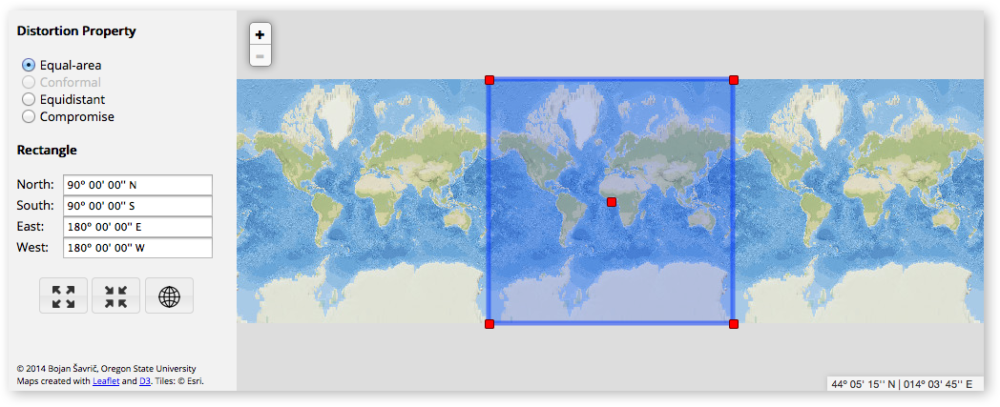

Projection Wizard is a web application that helps cartographers select an appropriate projection for their map. Depending on the extent and the distortion property of the map, the application returns a list of proposed map projections with additional projection parameters if necessary. There are PROJ and WKT links next to each projection that open a popup window with a PROJ or Well-Known Text string available for copying to the clipboard. Both strings are used in many cartographic and GIS applications. Projection Wizard displays a map preview on the right side of the list with a suggested projection. The preview shows how the projected data will look using D3.
This tool is based on John P. Snyder’s selection guideline and on the extension to this guideline for world and hemisphere maps written by the Cartography and Geovisualization Group at Oregon State University. Projection Wizard v2.0 also takes into account the results of a study published by Šavrič et al. in 2015. All publications related to Projection Wizard are listed at the bottom of this page.
When you publish a scholarly article that uses Projection Wizard or discusses its functionality, you are kindly asked to cite the following article: Šavrič, B., Jenny, B. and Jenny, H. (2016). Projection Wizard – An online map projection selection tool. The Cartographic Journal, 53–2, p. 177–185. Doi: 10.1080/00087041.2015.1131938.
Using Projection Wizard is easy and requires only two steps:
1 From the radio button list, select the distortion property of the map.
2 Select the geographic extent by using the input boxes on the left side of the map or by changing the rectangle on the map.
The anchors at the corners of the rectangle allow it to be resized. The rectangle can also be dragged around the map. Any change to the rectangle is reflected in the input boxes and vice versa. Changes to the rectangle or distortion property interactively update the list of proposed map projections and the map preview below the web map.

a The Select Currently Visible Area button adjusts the rectangle size to the current map view, selecting approximately 80% of the visible map.
b The Select Entire World button sets the rectangle size to the full extent.
c The Show Entire World button zooms out to the full extent.
d The Customize button opens the Projection Wizard Options dialog, which allows the user to modify the tool.
The Projection Wizard Options dialog allows you to modify the tool to better fit your needs. The options affect the projection parameters, elements in the PROJ and WKT strings, and the map preview. You can:
A toggle between decimal degrees and DMS formats for angular units,
B round the central meridian value to the nearest degree,
C select a system of geographic coordinates for the output strings,
D select between meters and international feet for linear units in the strings, and
E display the selected extent and/or the projection's origin point(s) in the map preview.
The extent of the geographic area:
World map – shows at least two-thirds of the full extent
Map showing a hemisphere – shows between one-sixth and two-thirds of the full extent
Map showing a continent or smaller areas – shows less than one-sixth of the full extent
The predominant extent and the orientation of the area shown on the map:
An east-west extent, resulting in a landscape-oriented map – the ratio between the central meridian and the longest parallel lengths is less than 0.8
A north-south extent, resulting in a portrait-oriented map – the ratio between the central meridian and the longest parallel lengths is more than 1.25
An equal extent, resulting in a square-shaped map – other ratio values
The latitude of the mapped area of a square-shaped map:
Center at pole – the central latitude is more than 75º N or 75º S
Center along equator – the central latitude is between 15º N and 15º S
Center away from pole or equator – all other central latitude values
The latitude of the mapped area of a landscape-oriented map:
Center at pole – the central latitude is more than 70º N or 70º S, or geographic area in a conic projection would otherwise expose an opening at a pole.
Center along equator – the central latitude is between 15º N and 15º S, or geographic area is within 23.43665º N and 23.43665º S for maps showing a hemisphere.
Center away from pole or equator – all other central latitude values
For world maps:
For maps showing a hemisphere:
For maps showing a continent or smaller areas:
Projection Wizard 2.0 (June, 2020)
This update was prepared in collaboration with @jwasilgeo and @jgravois.
Projection Wizard 1.2 (May, 2017)
Projection Wizard 1.1.1 (February, 2016)
Projection Wizard 1.1 (December, 2015)
Projection Wizard 1.0 (October, 2014)
Map Projection Selection Tool (June, 2013)
Jenny, B., Šavrič, B., Arnold, N. D., Marston, B. E. and Preppernau, C. A. (2017). A guide to selecting map projections for world and hemisphere maps. In: M. Lapaine and E. L. Usery (eds), Choosing a Map Projection, Lecture Notes in Geoinformation and Cartography (pp. 213–228). Berlin, Heidelberg, New York: Springer. Doi: 10.1007/978-3-319-51835-0_9
Šavrič, B., Jenny, B. and Jenny, H. (2016). Projection Wizard – An online map projection selection tool. The Cartographic Journal, 53–2, p. 177–185. Doi: 10.1080/00087041.2015.1131938
Šavrič, B. (2016). Projection Wizard: A free web application for selecting a map projection. ISPRS SC Newsletter, 9–4. p. 5. Available online: http://www.isprs-sc.org/material/isprs_sc_vol9_no4.pdf
Šavrič, B., Jenny, B., White, D. and Strebe D. R. (2015). User preferences for world map projections. Cartography and Geographic Information Science, 42–5, p. 398–409. Doi: 10.1080/15230406.2015.1014425
Šavrič, B., Jenny, B. and Jenny, H. (2014). Map projection selection tool. Presentation at the 34th Annual Meeting NACIS 2014, Pittsburgh, Pennsylvania, October 8–11.
Snyder, J. P. (1987). Map Projections – A Working Manual. Professional Paper 1395. Washington, DC: US Geological Survey. Doi: 10.3133/pp1395
Featured by GIS Lounge and Maps Mania.